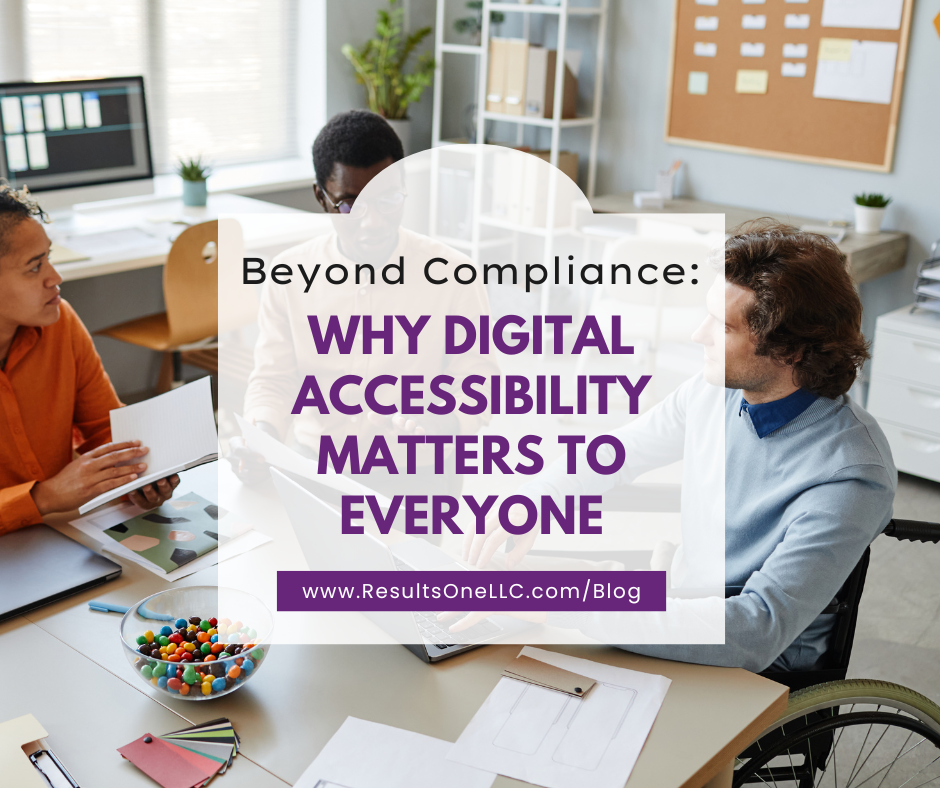

Beyond Compliance: Why Digital Accessibility Matters to Everyone

The True Meaning of Digital Inclusion
In the modern world, the internet isn’t a luxury; it’s a necessity. We use it to shop, bank, apply for jobs, access education, connect with family, and engage with government services. When a digital space is inaccessible, it creates a formidable barrier that excludes people from fundamental aspects of modern life.
Digital accessibility is the conscious design choice to build websites and applications so that everyone can use them, regardless of their abilities. It’s about ensuring that a person who is blind, or someone who can only use a keyboard, can access the same information and services as a person who uses a mouse and has perfect vision.
The Human Impact: Who Benefits?
The push for accessibility is driven by the fact that one in six people worldwide lives with some form of disability. This is not a small, fringe audience; it’s the largest minority group globally.
Here are a few examples of how digital barriers impact users:
1. Visual Impairments
- The Barrier: An image on a website has no Alternative Text (Alt Text).
- The Impact: A person who is blind and uses a screen reader (which reads digital text aloud) encounters the image but only hears “image file” or “unlabeled graphic.” They miss the critical information or context the image was meant to convey.
2. Motor/Physical Disabilities
- The Barrier: A form on a website can only be submitted by clicking a tiny button with a mouse.
- The Impact: A person with limited dexterity or a hand tremor (or someone who only uses a keyboard or a sip-and-puff device) cannot accurately click the button. They are stuck, unable to complete their transaction or application.
3. Auditory Impairments
- The Barrier: An important company training video is posted online without captions or a transcript.
- The Impact: A person who is deaf or hard of hearing is completely excluded from the content of the video, losing out on critical information, professional development, or entertainment.
4. Cognitive/Learning Disabilities
- The Barrier: A website has a complicated, erratic layout, flashing advertisements, or uses dense, complex jargon.
- The Impact: A user with ADHD, dyslexia, or a cognitive disability is easily distracted, overwhelmed, or unable to process the key information, leading to frustration and site abandonment.
The Business Case: A Win-Win-Win
While the ethical case is paramount, the benefits of digital accessibility align perfectly with a smart business strategy.
1. Financial Opportunity
People with disabilities and their families represent a massive, often underserved, market segment with estimated trillions in disposable income globally. Excluding them through poor design means leaving revenue on the table. Inaccessible websites often see up to 71% of users with disabilities abandon the site immediately.
2. Legal Risk Mitigation
In many regions, including the US (under the ADA) and the EU (under the EAA), digital accessibility is a legal requirement. Failure to adhere to standards like WCAG Level AA has led to thousands of costly lawsuits against businesses. Proactive accessibility is the best form of legal defense.
3. Better Usability for Everyone
Accessible design principles often result in a superior experience for all users:
| Feature Designed for Accessibility | Benefits for Users with Disabilities | Benefits All Users |
|---|---|---|
| High Color Contrast | Helps users with low vision or color blindness. | Helps users view screens in bright sunlight or low-light conditions. |
| Video Captions | Essential for deaf or hard-of-hearing users. | Great for users watching videos in a noisy office or a quiet library. |
| Clean Semantic Code | Ensures screen readers can correctly interpret the content. | Improves SEO (Search Engine Optimization), helping search engines rank your site higher. |
The Bottom Line: It’s About Opportunity
At its core, digital accessibility is about providing equal access to opportunity. It allows a student to register for a class, a veteran to apply for benefits, and a job seeker to submit a resume—all independently, with dignity, and with the same ease as anyone else.
By designing for disability, you are designing for flexibility, for clarity, and ultimately, for a stronger, more inclusive society.